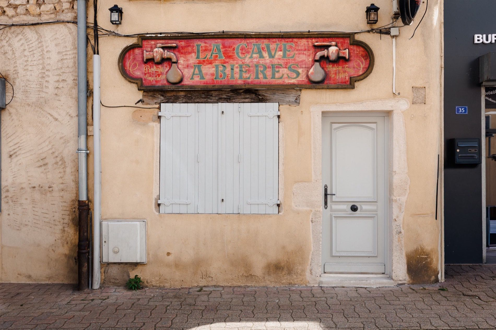

Sans voiture :
venir en train depuis Lyon
Pas de voiture, ou simplement pas envie de conduire pour une escapade à deux : la gare de Villefranche-sur-Saône se trouve à une vingtaine de minutes de Lyon en TER.

Entre la route, le stationnement et la vigilance qu'elle impose au retour, la voiture n'est pas toujours ce qu'on souhaite pour une nuit en amoureux. Bonne nouvelle : elle n'est pas nécessaire. Villefranche-sur-Saône est reliée à Lyon par une ligne TER directe et fréquente.
Le TER depuis Lyon : durée et fréquence
Comptez environ 20 à 25 minutes de trajet selon le train emprunté. En journée, le service est dense : les départs s'enchaînent à un rythme soutenu, sans qu'il soit nécessaire de caler son emploi du temps des heures à l'avance. Les horaires exacts du jour sont à vérifier sur SNCF Connect ou ter.sncf.com, qui font foi en cas de doute.
Depuis quelle gare partir
Les trains vers Villefranche-sur-Saône partent de plusieurs gares lyonnaises selon l'horaire : le plus souvent Lyon Part-Dieu, parfois Lyon-Perrache ou Lyon-Vaise. Un seul réflexe à garder : vérifier la gare de départ indiquée sur votre billet avant de vous y rendre, plutôt que de supposer qu'il s'agit toujours de la même.
De la gare jusqu'à la suite
La gare de Villefranche-sur-Saône se trouve à quelques minutes du centre-ville. Pour la dernière étape, un taxi ou un VTC reste la solution la plus simple, d'autant que l'adresse exacte de la suite n'est communiquée qu'à la confirmation du séjour, par discrétion. Prévenez simplement votre heure d'arrivée approximative : l'arrivée se fait en toute autonomie, sans réception à viser à une heure précise.
Ce qu'on ne regrette pas en venant sans voiture
Pas de recherche de place, pas d'horaires de stationnement à surveiller, pas de trajet retour à anticiper en fin de soirée si un dîner en ville s'éternise. Le train retire une variable logistique à un moment où l'on préfère ne penser à rien.
Bon à savoir avant de partir
- Achetez votre billet à l'avance sur SNCF Connect : les tarifs grimpent souvent à l'approche du départ.
- Pour un retour en fin de week-end, vérifiez l'heure du dernier train du dimanche, parfois plus matinale qu'en semaine.
- Voyagez léger : le confort d'un trajet de 20 minutes se perd vite avec une valise trop lourde à porter jusqu'au taxi.
Les horaires de train peuvent évoluer d'une saison à l'autre : en cas de doute, le site officiel ter.sncf.com fait foi.
Questions fréquentes
Peut-on venir à Villefranche-sur-Saône en train depuis Lyon ?
Oui. Une ligne TER directe relie Lyon à Villefranche-sur-Saône, avec des départs fréquents en journée depuis Lyon Part-Dieu, Lyon-Perrache ou Lyon-Vaise selon les horaires.
Combien de temps dure le trajet en TER entre Lyon et Villefranche-sur-Saône ?
Comptez environ 20 à 25 minutes selon le train emprunté. Les horaires exacts, qui varient selon la gare de départ, sont à vérifier sur SNCF Connect ou ter.sncf.com avant de partir.
Comment rejoindre la suite depuis la gare de Villefranche-sur-Saône ?
La gare se trouve à quelques minutes du centre-ville. Pour la dernière étape, un taxi ou un VTC est la solution la plus simple : l'adresse exacte de la suite n'est communiquée qu'à la confirmation du séjour, par discrétion.
Faut-il une voiture pour profiter du séjour ?
Non, pas pour la nuit elle-même : le logement entier vous est réservé, sans sortie prévue au programme. Une voiture devient utile uniquement si vous souhaitez ensuite rayonner dans le vignoble du Beaujolais.

La Voûte des Sens
Une voûte de pierre,
deux personnes.
Balnéo privative, douche sensorielle et pièce secrète, à Villefranche-sur-Saône, à 40 minutes de Lyon. 5,0/5 sur 20 commentaires.